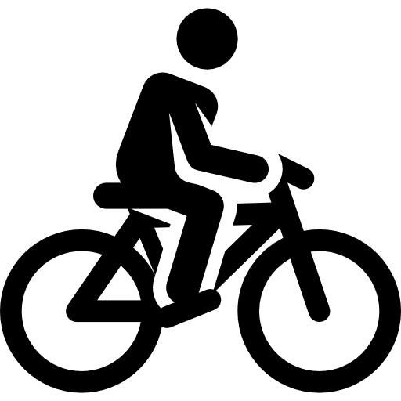

Activities
You are going to discover a beautiful region where you are most welcome and a charming authentic house where to stay.
The house is less than an hour from Dijon, Beaune , and the lovely country of Morvan.
You will be able to practice all activities according to your age .
Cultural Activities
Numerous possibilities of places to visit:
● Commarin and its Château , Henri Vincenot’s house . Henri Vincenot is a well known writer (20th century) who spent a great part of his life in our village.


● Chateauneuf , with its beautiful castle and sight from here .


● The vineyard road with the famous « Clos de Vougeot » , la Maison Patriarche.

● Dijon with the palace of the dukes of Burgundy , the fine Arts Museum,…

● Beaune and its famous Hospices , its remparts .

● Lots of ancient historical Gallo-Roman places : Alesia, Bibracte, Autun
● Local craftsmen or artists .
More information below:
- https://www.entre-ouche-et-montagne.fr/sites-incontournables.html
- https://www.tourismepouillybligny.fr/visiter-explorer/nos-incontournables/
- https://www.entre-ouche-et-montagne.fr/en-voiture-sur-le-toit-du-monde-occidental.html
- https://www.lacotedorjadore.com/quefaire/patrimoine/chateaux/commarin
- https://www.lacotedorjadore.com/destination-cote-dor/lauxois-berceau-de-lhistoire/
- https://www.entre-ouche-et-montagne.fr/artisanat.html
- https://www.adeuxmainstenant.fr/
- https://www.tourismepouillybligny.fr/produits-locaux/
Sports moment and relaxation
Water Sports

5 minutes from the house you will find a important lake ,the Panthier’s lake, where you can enjoy its water sports centre ( boats , windsurfing board, paddle, or just a sunbath on its lovely beach).


More information below
Trekking

For those who like walking through our peaceful forests , you will enjoy many waymarked footpathes. One of them is starting just by the house ( the 3 Châteaux tour) .
15 minutes from the house is the Cercey Reservoir , a natural space area where you can admire all sorts of birds.


A walk through the so callled Bois Royal de Pierre Saux would be agood idea to get to know all the different sorts of trees.


More information below
- https://www.entre-ouche-et-montagne.fr/a-pied.html/
- https://www.tourismepouillybligny.fr/saerer-et-se-balader/un-petit-tour-des-lacs/
- https://www.tourismepouillybligny.fr/visiter-explorer/balades-villages/
- https://www.tourismepouillybligny.fr/nos-randonnees/
- https://www.tourismepouillybligny.fr/uploads/2022/04/foret_flyer_v6_01_bd.pdf
Cycling
you will find all sort of routes( for landscapes or just for pleasure ) of various difficulty levels.
From our guest house , the ride from the Château to the canal will take you to the lake of Panthier , following the old canal lane with cultural spots here and there.
You can hire bicycles locally ( 15 minutes from the house)
More information below
- https://www.tourismepouillybligny.fr/saerer-et-se-balader/boucles-velo/
- https://www.entre-ouche-et-montagne.fr/a-velo.html
Golf Practice

2 maginificient golf courses. , 20 minutes from here:
One at Château de Chailly ( a 16th century place) , the course is considered as one of the best in the east of france . The Golf de la Chassagne , 15 minutes from here settled in a natural area looking on beautiful sights and landscapes( castle of Malain, cliffs, river valleys, century old trees,..)
More information below
- https://www.chailly.com/fr/golf-tarifs.html
- https://golflachassagne.com/le-parcours-du-golf-de-la-chassagne/
Fishing activities

Many local fishing places are available for your pleasure. All are respecting natural surroundings . We have even got a place labelled « Station Pêche »
More information below
- https://www.tourismepouillybligny.fr/loisirs-et-detente/gardez-la-peche/
- https://www.lacotedorjadore.com/que-faire/nature/autour-eau/top-lieux-peche/#:~:text=A%20Vandenesse%2Den%2DAuxois%2C,au%20bord%20de%20l'eau.
Greedy moments
While on holiday , rejoyce your palate with numerous good restaurants:
- some of them are very near our guest house : l'Orée du Bois, le Grill du Castel à Chateauneuf, l'auberge de Guillaume à Vandenesse en Auxois….
- you can taste local production food at the different village markets.
- We suggest a culinary visit tour with , a traditionnal chocolate maker at Bligny sur Ouche , the Anised ball factor at Flavigny, the Fallot mustard factory , A farm called « la ferme Fruitsrouge » .
- You can also call a home coming Chef we are recommending ( looking adress to book maximebesson@icloud.com )
More information below
- https://www.tourismepouillybligny.fr/oumanger/
- https://www.lacotedorjadore.com/ou-manger/
- https://www.entre-ouche-et-montagne.fr/agenda.html (liste des marchés nocturnes)
- https://www.tourismepouillybligny.fr/produits-locaux/nos-marches/
- https://chocolatpurokao.fr/
- https://www.anis-flavigny.com/
- https://www.facebook.com/Maximebesson21/?locale=fr_FR
Sweet moments
You can relax and take care of yourself while on holiday ( massage, spa ) . Beauty care and treatment are locally available. You can also hire Marie for a wellness massage at home (looking phone number to book : (+33)0612770878) .
More information below
- https://www.tourismepouillybligny.fr/sit/deux-mains-dans-lauxois
- https://www.espacedetenteetbeaute.fr/spa-massages/
- https://www.lacotedorjadore.com/que-faire/prendre-soin-de-soi-en-cote-dor/
- https://www.lac-de-panthier.com/?view=article&id=123:spa-massage&catid=2
More Activities
- A zoo « Zoo de l’Auxois » (30 mn from here )
- A flying club , a karting track, balloon flight, climbing site ( 10 mn from our place)
- Accrobranche park, a horse riding centre in the middle of the Burgundy vineyards(25 mn from here)
- Numerous interesting organised trails running
- Boat trip (10mn from here ) to discover the Burgundy Canal
More information below
- https://www.parc-auxois.fr/
- https://sites.google.com/site/ecuriesurlavale2/centre-equestre/le-centre-equestre
- https://www.tourismepouillybligny.fr/fiches/ulm-club-de-pouilly/
- https://www.entre-ouche-et-montagne.fr/activites-pleine-nature.html
- https://www.tourismepouillybligny.fr/fiches/auxois-sud-karting-kartmania/
- https://www.entre-ouche-et-montagne.fr/terre-de-trails.html
- https://www.tourismepouillybligny.fr/loisirs-et-detente/gardez-la-peche/
- https://www.bourgogne-tourisme.com/bateaux-promenade/bateau-promenade-la-billebaude
If you need some piece of advice , please ask us . We will answer with pleasure ! We hope you will enjoy your stay in this peaceful Burgundy area, historically rich and picturesque.